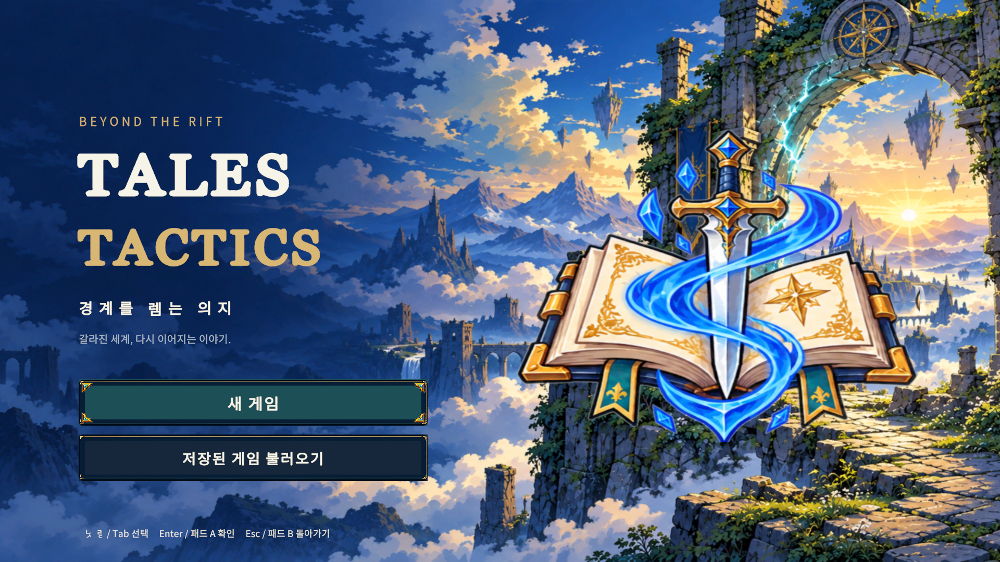

원본 열기 ↗임무 · 적 정보 · 이야기
임무 확인부터 대화와 결과까지의 실제 화면입니다.
TALES TACTICS · SD ART DIRECTION
시안이 아닌 실제 Unity 실행 캡처
실제 Unity 캡처 36장을 수록했습니다. 미리보기를 누르면 편집하지 않은 원본 PNG를 새 탭에서 엽니다. UI는 1920 × 1080, 1024 × 768과 세로 1080 × 1440 화면을 포함합니다.
별도 UI 경계 검사: 1,200개 조합 · 경계 문제 0 · 수집 오류 0. 80개 화면 상태 × 5개 해상도 × 글자 크기 100/115/130%의 기록이며, 아래 36장과는 구분되는 수치 검사입니다. 원시 검사 결과 ↗
시작 화면과 6인 출전 준비 화면입니다.
같은 편성 화면의 두 해상도와 스크롤 위치, 동료 정비 화면을 비교할 수 있습니다.
편성·장비·성장·설정의 실제 세로 화면 네 장입니다. 가로 화면과 같은 원본 링크 방식으로 전체 화면을 확인할 수 있습니다.
임무 확인부터 대화와 결과까지의 실제 화면입니다.
6인 전장과 기술 연출의 특정 순간입니다. VFX는 고정 30fps 검증 fixture에서 캡처했으며, 실시간 성능이나 프레임률 유지의 증거가 아닙니다.
마신검 실행 중 연속 캡처에서 고른 네 장입니다. 번호는 캡처 프레임 번호이며, 원본에서 각 시점의 자세와 검·갑옷·머리 윤곽을 확인할 수 있습니다.
Windows 검수 실행본에서 촬영한 장착·전장·보스 화면 여섯 장입니다. 벨벳·시온은 긴 병기명 표시 개선을, 오리진은 정면 능력창과 Collapse 발동 순간을 각각 보여 줍니다. 원본 출처·해시·크기 기록 ↗